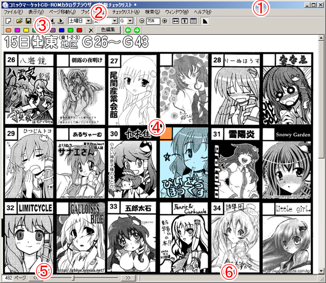

サークルカットウィンドウは、DVD-ROMカタログブラウザのメインウィンドウです。
次に示す、6つの部分から構成されます。

アプリケーションのタイトルと、現在編集中のチェックリストファイル名が表示されます。
チェックリストが最後に保存された状態から編集されている場合、ファイル名の右側に「*」（アスタリスク）マークが表示されます。
メインメニューからは、ファイルの保存や読み込み、サークル検索や印刷、ページ移動、ウィンドウのON/OFFなどの操作を行うことができます。
詳しくは、「メインメニュー」の項目を参照してください。
メインウィンドウツールバーには、比較的よく使われる機能が配置されています。
それぞれの機能の説明は、「メインウィンドウツールバー」の項目を参照してください。
現在表示中のページのサークルカットが表示されます。
薄い水色はサークルを選択するカーソルで、マウスクリックかキーボードのカーソルキーで移動できます。
リターンキー、もしくは1～9キーで選択中のサークルをチェックリストに登録できます。
チェックリストに登録されたサークルのカットには、左上のスペース番号の部分にチェック色でマークがつきます。
0キーもしくはDeleteキーで、チェックリストから解除することができます。
マウス操作の場合は、左ボタンダブルクリックで標準のチェック色でチェックリストに追加します（リターンキー相当）。
また、右クリックでコンテキストメニューが出るので、これを利用してチェック色を変更したり、チェックリストから解除したりすることができます。
カーソル自動移動を有効にしている場合でも、シフトを押しながら左ボタンクリックをすることで、カーソル位置をロックすることができます。このときカーソルは薄い赤色になります。再度画面をクリックするとロックは解除されます。
表示ページを変更するのに使用します。
左のページ番号を表示しているボックスに直接数値を入力するか、右側のスクロールバーを動かすことで、指定ページにジャンプすることができます。
SHIFT + マウスホイールでもページを移動できます。サークルカットの全画面が表示されている場合は、単純ホイール操作でもページが移動します。
現在のマウスカーソルの位置にあるサークルカットのサークル情報が、簡易表示されます。